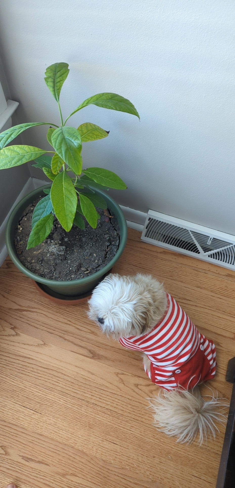
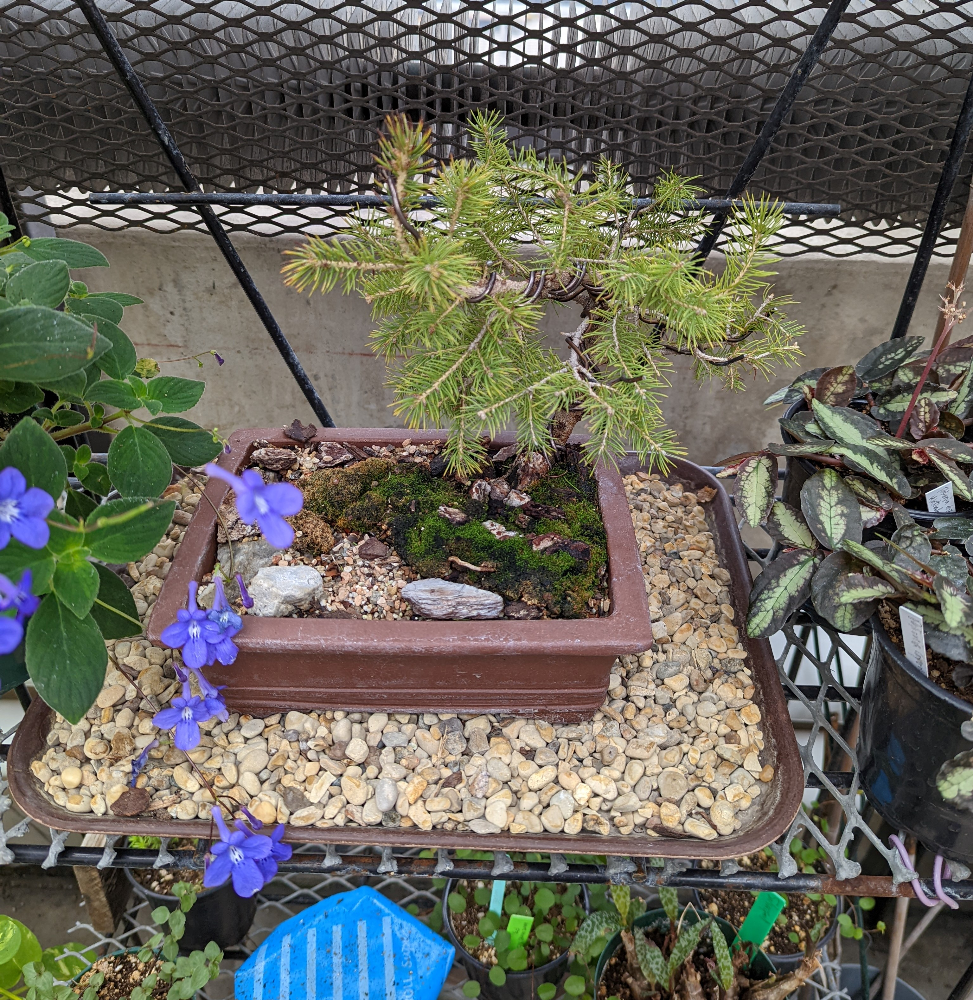

A collection of plants that I find interesting
>
Avocado plant that I have been growing for a year now. Submitted by Joe B. on 1/17/2022
>
This is a pine bonsai I saw at the school greenhouse. Submitted by Joe B. on 1/4/2022